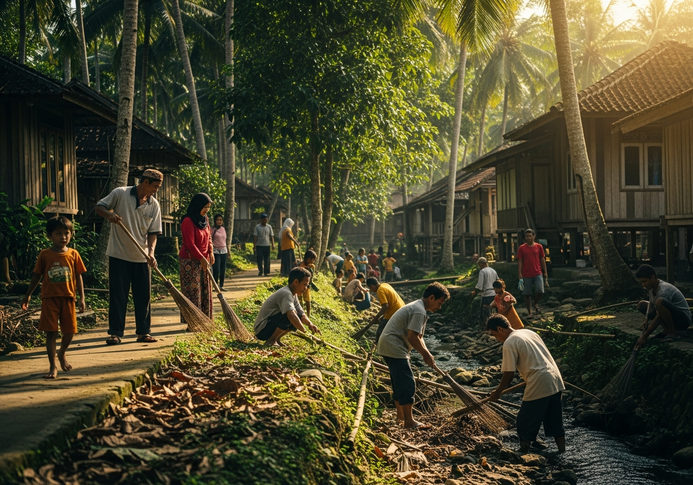
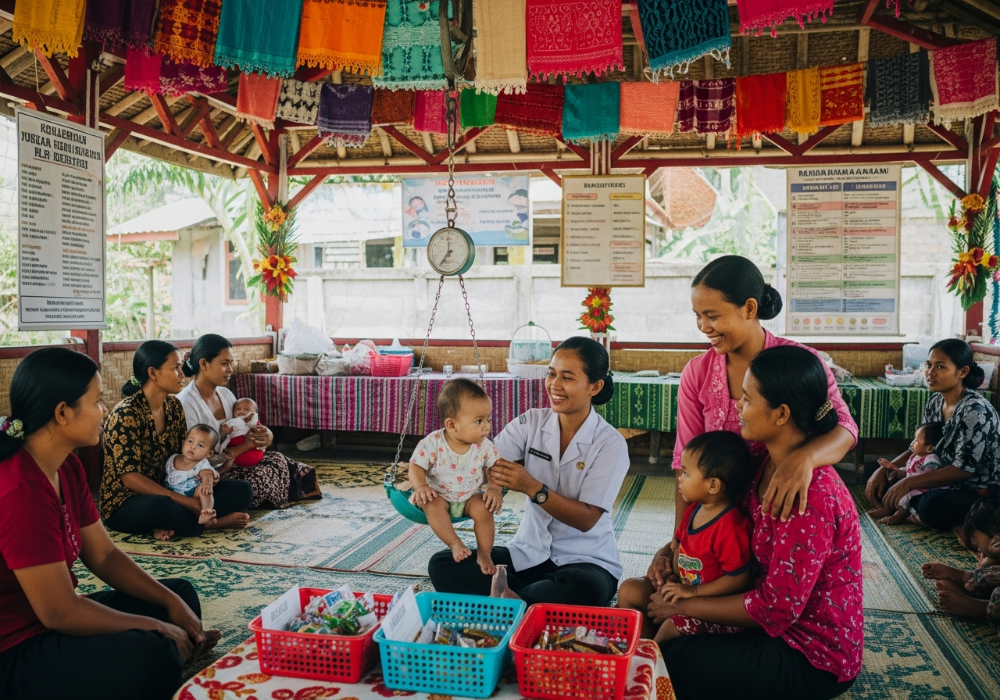
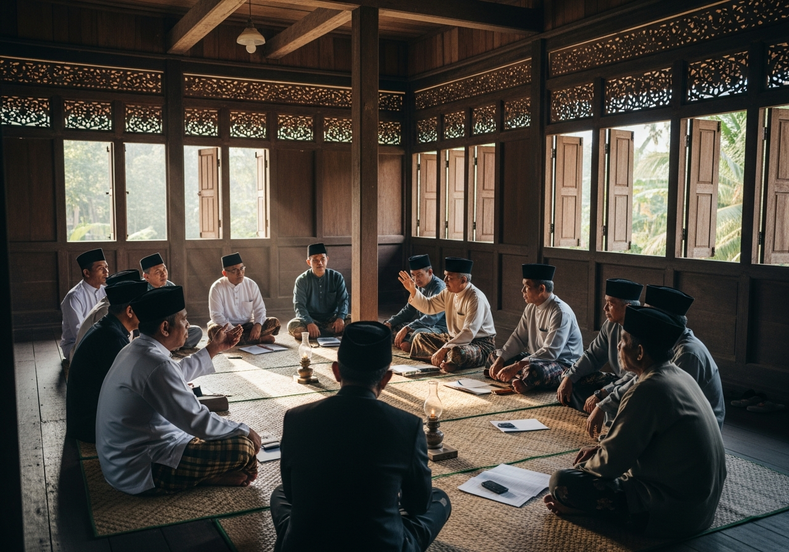

Kegiatan📅 15 Mei 2025
Gotong Royong Bersihkan Nagari
Seluruh warga Nagari Silongo bahu-membahu membersihkan fasilitas umum, drainase, dan lingkungan sekitar jorong dalam semangat kebersamaan.
Kecamatan Lubuk Tarok · Kabupaten Sijunjung · Sumatera Barat
Portal informasi resmi Nagari Silongo yang menyajikan profil nagari, pemerintahan, potensi daerah, budaya, dan informasi masyarakat secara modern dan transparan.
Nagari Silongo merupakan salah satu nagari di Kecamatan Lubuk Tarok, Kabupaten Sijunjung, Sumatera Barat yang memiliki potensi alam, budaya Minangkabau, serta kehidupan masyarakat yang masih menjunjung tinggi adat dan nilai kebersamaan.
Aparatur pemerintahan Nagari Silongo yang berdedikasi melayani dan membangun masyarakat dengan prinsip transparansi dan gotong royong.
Sumber daya alam dan manusia yang menjadi motor penggerak perekonomian dan pembangunan Nagari Silongo.
Lahan pertanian subur dengan hasil padi dan tanaman palawija yang melimpah sepanjang tahun.
25+ usaha mikro kecil dan menengah aktif yang terus berkembang dan berinovasi.
Keindahan alam perbukitan dan sungai alami yang menawarkan pengalaman ekowisata.
Tradisi dan adat Minangkabau yang masih terjaga dan menjadi kebanggaan masyarakat.
Peternakan sapi dan unggas sebagai sumber ekonomi andalan warga nagari.
Kekayaan alam dan budaya Minangkabau yang menjadi kebanggaan Nagari Silongo.
Informasi terkini seputar kegiatan, pembangunan, dan kehidupan masyarakat Nagari Silongo.

KegiatanSeluruh warga Nagari Silongo bahu-membahu membersihkan fasilitas umum, drainase, dan lingkungan sekitar jorong dalam semangat kebersamaan.

KesehatanKegiatan Posyandu bulan ini berhasil melayani 120 balita dan ibu hamil dengan pemeriksaan gizi, imunisasi, dan penyuluhan kesehatan.

PemerintahanMusyawarah nagari dihadiri oleh tokoh masyarakat untuk membahas prioritas penggunaan dana nagari tahun 2025.
Festival budaya tahunan digelar meriah dengan penampilan randai, tari piring, pertunjukan saluang, dan pameran kuliner tradisional.
Momen-momen berharga kehidupan dan kegiatan masyarakat Nagari Silongo.
Kami siap melayani dan menjawab pertanyaan Anda melalui saluran resmi berikut.